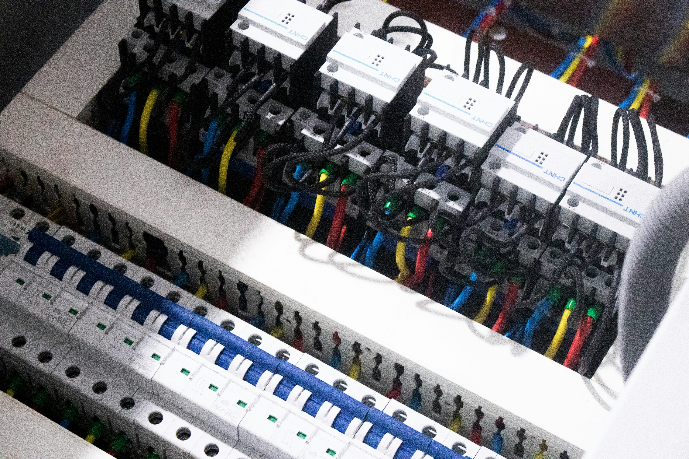

The new students are excited to begin their academic journey.
Make good use of the facilities.
The institution wishes all new students a successful experience.
The university management has encouraged students
to remain focus.
Abdulmalik,Tech
Latest News
Electricity

The Federal Government has announced that electricity has been restored
to Lagos, Ogun, Oyo, Kwara and Abuja after the vandalised.
Read More
For the past few days,many Nigerian in Lagos,Ogun,Oyo............
have been complaining about no light.Some areas had light for only
few hours,some had no light at all.
Politics
Next Election
Tinubu announced that the next election will happen very soon.
He also advised the Jamb Coordinator to take the upcoming
examination before the election.Starting from next week,all citizens are granted
to fly abroad with a discount covered by Tinubu.
Read More
And the most interesting part of the announcement is
about travelling abroad.He advised everyone to tell their family
memmbers,friends and tell everybody.
Business
Campaign
Some Nigerians have been campaigning with Very Darkman on how dollar
is affecting Nigeria's currency.Dr Seyi Tinubu promised that the problem
will be solved before election.Apart from that,he warned the farmers to stop
using chemicals to harvest.
Read More
The chemicals can enter the food and cause sickness.They
want farmers to go back to the natural way of harvesting,so that
the food will be safe for everybody.
Sports
Football
Moses Okenla plays for liverpool scored the most interesting goal this year
World Cup.Vici Victor plays for chelsea reported that he is going to resign due
to some reasons.Abdulmalik Bayern player got injured when playing a match
in Dubai
Read More
His teammates are also missing him,because he is a very important
player in the team,and they need him.
Entertainment
JagunJagun part 2 is to be released on the 2nd of December.Burna Boy has
been releasing an album every month on Spotify, more than the remaining
musicians.That is crazy!.
Tech
Many young people in nigeria are now rushing to learn Tech.Apple Tree Tech
teaches any individual who has access to a PC,free tech learning for good
three months.Instead of using paper,Tech will help to grow businesse and
makes life easier.Tech is the future.